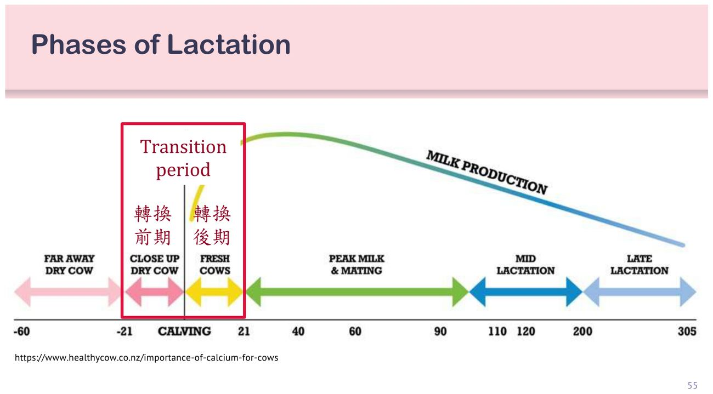
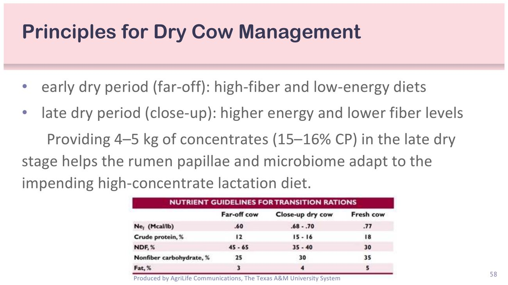
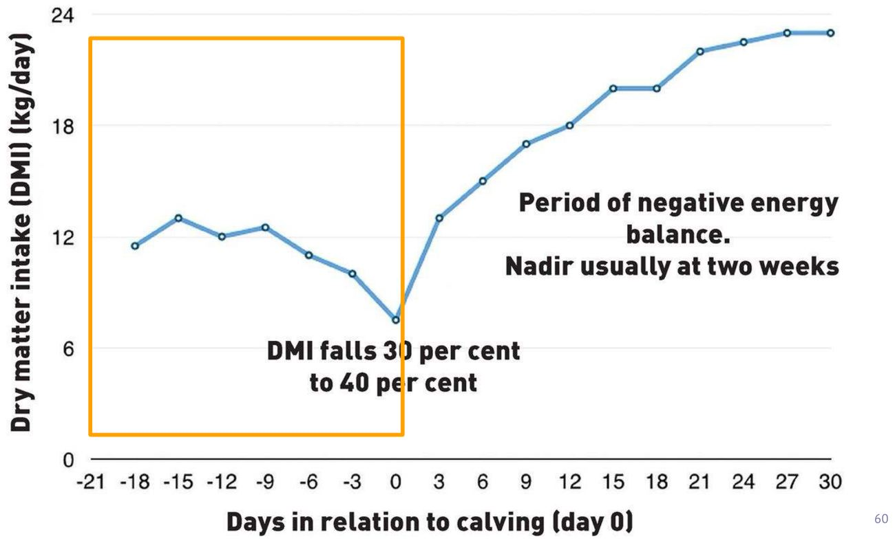
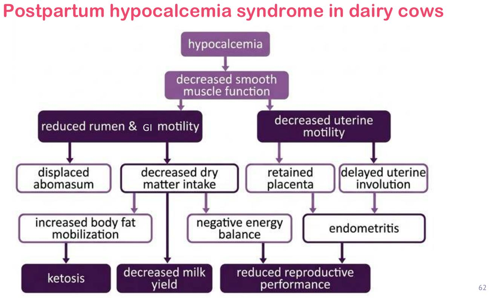

大方向與重點摘要
- 這章在講什麼
- 〈消化生理〉講義的後半段（Contents 第 3、4 項）：泌乳分期 → 乾乳期管理 → 轉換期（transition period） → 低血鈣症（hypocalcemia, milk fever；乳熱症） → 用陰陽離子差（dietary cation-anion difference, DCAD）預防。前半段（營養與 TMR）見姊妹頁。
- 為什麼重要
- 分娩後乳牛突然需要大量鈣，而這時採食量正在谷底。低血鈣不只讓牛站不起來，還會透過平滑肌功能下降同時打到消化道與子宮，是一串產後疾病的上游。轉換期卻常被牧場忽略，因為這群牛「還沒賺錢」。
- 這章要抓的重點
-
- 泌乳分期：轉換期＝產前 21 天到產後 21 天；轉換前期＝close-up dry cow，轉換後期＝fresh cow。
- 乾乳期：理想 45–60 天；三個目標：乳腺修復再生、胎兒快速發育、初乳合成，並調整體況。
- 乾乳期飼養：far-off 高纖低能；close-up 高能低纖，給 4–5 kg 精料（15–16% CP）讓瘤胃乳突與菌相適應。
- Close-up：產前三週免疫力下降、胎兒需求達高峰，但 DMI 下降 30–40%。
- 低血鈣：分臨床型與亞臨床型；鈣先從血液、再從飲食與骨骼動員；動員不足 → 起立困難、食慾下降。
- 產後低血鈣症候群：平滑肌功能↓ → 消化道（皺胃移位、DMI↓ → 酮症、乳量↓）＋子宮（胎衣滯留、子宮復舊延遲 → 子宮內膜炎 → 繁殖表現↓）。
- DCAD：(Na⁺ ＋ K⁺) − (Cl⁻ ＋ S²⁻)，單位 mEq；負 DCAD → 血液輕度酸化 → 刺激骨鈣動員。
- 容易混淆
- 乾乳期 vs 轉換期：乾乳期 45–60 天全在產前；轉換期 42 天，跨產前產後各 21 天，只有前半段和乾乳期重疊。far-off vs close-up 的日糧方向相反：前者高纖低能，後者高能低纖。DCAD 要「負」：陰離子（Cl⁻、S²⁻）多於陽離子（Na⁺、K⁺），不是補更多鈣。乳熱症不發燒：名稱叫 milk fever，但病牛體溫偏低（補充）。
- 考試可能怎麼問
（推測） - 轉換期的定義與天數；乾乳期長度與三目標；far-off 與 close-up 的飼養原則；close-up 精料量與 CP；DMI 下降幅度；低血鈣的連鎖病變圖（申論題）；DCAD 公式、單位與機轉。
內容以老師講義為主體。這部分講義只有 9 頁，臨床分期、治療劑量、DCAD 目標值等都是講義以外的內容，均標示「補充」並註明出自 MSD Veterinary Manual〈Parturient Paresis in Cows〉；標示「推測」的是依講義強調處推測的出題方向，不是考古題。考試範圍以老師上課為準。圖片為老師講義截圖。
胎兒需求高峰、免疫力 ↓
鈣需求暴增
消化道＋子宮
乳量與繁殖表現 ↓
泌乳分期與轉換期 Phases of Lactation
先在一條以「分娩＝第 0 天」的時間軸上，把每個階段的名稱與天數對好。
泌乳分期（p.53）必考
| 階段 | 相對分娩的天數（看圖） | 備註 |
|---|---|---|
| 乾乳前期 Far-away (far-off) dry cow | −60 → −21 | — |
| 乾乳後期 Close-up dry cow | −21 → 0 | 轉換前期 |
| 產後新鮮牛 Fresh cows | 0 → 21 | 轉換後期 |
| 泌乳高峰與配種 Peak milk & mating | 21 → 約 100 | 乳量曲線最高 |
| 泌乳中期 Mid lactation | 約 100 → 200 | — |
| 泌乳後期 Late lactation | 200 → 305 | 標準泌乳期 305 天 |

轉換期的定義必考
轉換期（transition period）＝產前 21 天到產後 21 天，乳牛的生理從乾乳期轉成泌乳期。但牧場常忽略這群牛的飼養管理，把牠們當成還不會帶來經濟收益的非泌乳牛（p.55）。
補充：牧場大部分的產後疾病（低血鈣、酮症、皺胃移位、胎衣滯留、子宮炎、乳房炎）都集中在分娩後前幾週，所以轉換期管理做得好不好，幾乎決定整個泌乳期的乳量與配種成績。
乾乳期管理 Dry Period & Dry Cow Management
乾乳不是讓牛休息而已：這 45–60 天要修好乳腺、養大胎兒、做好初乳，還要讓瘤胃準備好迎接高精料。
乾乳期的定義與目標（p.54）必考
乾乳（dried off）指停止泌乳的階段，理想長度 45–60 天，有三個關鍵目標：
① 乳腺修復與再生
Mammary gland repair and regeneration
② 胎兒快速發育
Meeting the demands of rapid fetal development
③ 初乳合成
Colostrum synthesis
此外也讓牛調整體況（body condition）、累積體脂肪，以因應產後負能量平衡（negative energy balance）。
Far-off vs Close-up 的飼養原則（p.56）必考
| 乾乳前期 Far-off（早期） | 乾乳後期 Close-up（晚期） | |
|---|---|---|
| 日糧方向 | 高纖維、低能量 | 較高能量、較低纖維 |
| 精料 | — | 4–5 kg 精料（15–16% CP） |
| 目的 | 避免過胖（補充） | 讓瘤胃乳突與微生物相適應即將到來的高精料泌乳日糧 |
轉換期日糧營養指引（p.56 表，Texas A&M AgriLife）理解
| Far-off cow | Close-up dry cow | Fresh cow | 趨勢 | |
|---|---|---|---|---|
| NEL（Mcal/lb） | 0.60 | 0.68–0.70 | 0.77 | ↑ 能量密度逐步增加 |
| 粗蛋白 CP（%） | 12 | 15–16 | 18 | ↑ |
| NDF（%） | 45–65 | 35–40 | 30 | ↓ 纖維逐步減少 |
| 非纖維碳水化合物 NFC（%） | 25 | 30 | 35 | ↑ |
| 脂肪（%） | 3 | 4 | 5 | ↑ |

表的重點是「逐步」：瘤胃乳突長長需要時間，微生物相也要慢慢換。如果乾乳期一路高纖低能，產後突然換成高精料，瘤胃來不及適應，就容易酸中毒、採食量更差（推測，對應講義「讓瘤胃乳突與菌相適應」的說法）。注意單位是 Mcal/lb，換成 Mcal/kg 要乘 2.2（補充）。
Close-up 的困境（p.57–58）必考
- 產前最後三週，乳牛免疫功能開始下降。
- 此時胎兒營養需求達到高峰，但母牛自己的 DMI 卻下降 30–40% → 這段期間要盡量提高 DMI。

DMI 在分娩當天最低，產後才慢慢爬回來；但乳量在產後上升得比 DMI 快，所以產後出現負能量平衡，最低點通常在產後兩週。這段「吃不夠、產很多」的缺口就是酮症、脂肪肝的背景（後者為補充）。
讀書補充Note - 「母牛自己的 DMI 下降」是什麼意思？
1. 意思
- 「自己的 DMI」＝母牛自己吃進去的乾物質量；「自己」是和胎兒的需求做對比。
- 產前最後三週：胎兒營養需求達到高峰，但母牛自己吃的卻下降 30–40% → 需要最多時吃得最少，所以要盡量提高 DMI。
2. 看圖（p.58）
- 約產前 21 天 DMI 約 12 kg/天，一路降到分娩當天最低（約 7–8 kg/天，降約 30–40%）。
- 產後逐步回升，產後 30 天左右約 23 kg/天。
- 產後乳量上升得比 DMI 快 → 負能量平衡，最低點通常在產後約兩週。
3. 為什麼自己吃得變少（補充，講義只寫現象、沒寫原因）：胎兒長大擠壓瘤胃、腹腔空間變小；產前荷爾蒙變化（如雌激素升高）抑制食慾；分娩前的緊迫與不適。
4. 為什麼重要
- DMI 低 → 負能量平衡 → 體脂大量動員 → 酮症、脂肪肝（補充）。
- 鈣吃得更少 → 分娩後更容易低血鈣（見下一節）。
- 免疫功能同時下降 → 胎衣滯留、子宮炎、乳房炎風險上升（補充）。
5. 怎麼盡量提高 DMI（補充，臨床做法）
- close-up 日糧能量密度高一點、適口性好（講義：給 4–5 kg 精料）。
- 乾淨的水、足夠的飼槽空間、減少緊迫與擁擠、牛舍通風涼爽。
- 避免日糧突然改變，讓瘤胃乳突與菌叢有時間適應。
讀書補充Note - NEL、CP、NDF、NFC 是什麼？為什麼逐步改變？
1. 三個時期（以分娩為第 0 天）
- Far-off（乾乳前期）：產前約 60 → 21 天，高纖低能量，避免過胖。
- Close-up（乾乳後期）：產前約 21 → 0 天，提高能量與精料，讓瘤胃適應。
- Fresh cow（產後新鮮牛）：產後 0 → 21 天，剛開始泌乳，能量需求最高。
2. 四個縮寫
- NEL（NEL）＝Net Energy for Lactation，泌乳淨能：這份飼料能提供多少能量給泌乳（和維持、懷孕）；表格單位 Mcal/lb，換成 Mcal/kg 乘 2.2（補充）。
- CP＝Crude Protein，粗蛋白：含氮物質總稱（含真蛋白與 NPN；實驗室常用氮 × 6.25 估計，補充），單位為佔日糧乾物質的 %。
- NDF＝Neutral Detergent Fiber，中性洗滌纖維：總纖維（細胞壁），主要是纖維素、半纖維素、木質素（補充）；纖維多 → 能量低、刺激反芻。
- NFC＝Non-Fiber Carbohydrate，非纖維碳水化合物：澱粉、糖、果膠等容易發酵的碳水化合物；概念上 NFC ＝ 100 − NDF − CP − 脂肪 − 灰分（補充）。
3. 三個時期的數字（講義 p.56 表）
- NEL（Mcal/lb）：0.60 → 0.68–0.70 → 0.77（逐步增加）。
- CP（%）：12 → 15–16 → 18（逐步增加）。
- NDF（%）：45–65 → 35–40 → 30（逐步減少，四項中唯一減少的）。
- NFC（%）：25 → 30 → 35（逐步增加）。
- 脂肪（%）：3 → 4 → 5（逐步增加）。
4. 為什麼是「逐步」：瘤胃乳突與微生物相需要時間適應；若乾乳期一路高纖低能、產後突然換成高精料，瘤胃來不及適應，容易酸中毒、採食量更差（推測，對應講義「讓瘤胃乳突與菌相適應」）。
5. 容易混淆
- NDF 與 NFC 方向相反：纖維減少、非纖維碳水增加。
- NRC 泌乳牛需求表另有限制：NDF 有下限（至少 25–33%）、NFC 有上限（最高 36–44%），目的是保護瘤胃、避免精料過多造成酸中毒（見營養頁第 6 節）。
- 練習題「從 far-off → close-up → fresh cow 日糧營養趨勢」答案：NEL、CP、NFC、脂肪逐步增加；NDF 逐步減少。
低血鈣症 Hypocalcemia / Milk Fever
分娩後鈣的需求突然暴增，牛來不及把骨骼與飲食中的鈣動員出來，就會低血鈣。
講義的定義（p.59）必考
- 低血鈣症（hypocalcemia），又稱乳熱症（milk fever），是乳牛常見的代謝性疾病，特徵是血鈣濃度低。
- 有臨床型與亞臨床型，在乳牛最脆弱的轉換期嚴重影響健康。
- 分娩後立刻需要大量鈣：先從血液取用，接著從飲食與骨骼儲存動員。
- 動員不足 → 無法正常行走或站立、食慾下降 → 整體健康與泌乳表現變差。
初乳與乳汁帶走大量鈣
站不起來、食慾↓
臨床分期與血鈣切點（補充）理解
| 分期 | 表現 |
|---|---|
| 第 1 期 | 還能站立、行走；過度敏感、興奮 |
| 第 2 期 | 胸骨著地伏臥（sternal recumbency）、意識遲鈍、四肢末端冰冷；頸部可能呈 S 形 |
| 第 3 期 | 失去意識至昏迷、側臥（lateral recumbency）；心跳可接近 120 次/分 |
- 臨床型：血鈣通常降到 < 1.5 mmol/L（6.0 mg/dL）；正常下限約 2.12 mmol/L（8.5 mg/dL）。
- 亞臨床型：沒有明顯症狀，泌乳第 4 天血鈣 ≤ 2.2 mmol/L（8.8 mg/dL）。
- 其他表現：體溫偏低、瘤胃臌氣、不排糞、肛門括約肌鬆弛。
- 好發：高產、第三胎以上的乳牛；娟姍牛（Jersey）、更賽牛（Guernsey）發生率較高；多在分娩開始到泌乳第 3 天左右發生。
以上分期、切點、好發族群出自 MSD Veterinary Manual〈Parturient Paresis in Cows〉，講義沒有寫；考試以講義與上課內容為準。
治療（補充）理解
| 情況 | 給藥 | 途徑與要點 |
|---|---|---|
| 伏臥（第 2、3 期） | 23% 葡萄糖酸鈣 500 mL（≈ 10.7 g 元素鈣） | IV（頸靜脈），10–20 分鐘緩慢給完，同時監聽心臟；出現嚴重心律不整或心搏過緩就停止輸注。約 75% 在 2 小時內站起，但 25–40% 會復發臥地 |
| 還能站（第 1 期） | 口服鈣丸（bolus），每次 40–55 g 元素鈣 | PO；第一顆後 12 小時再給一顆；約 30 分鐘達峰 |
| 皮下給鈣 | 23% 葡萄糖酸鈣 500 mL | SC，分在肩胛骨後方至少兩處；約 4 小時達峰；4–8 小時後接著口服鈣以免回跌 |
IV 鈣不能推快：高濃度鈣直接作用在心肌，可造成嚴重心律不整甚至心搏停止，所以要慢慢滴、邊聽心音（補充）。不要用口服鈣膏、凝膠或液體灌給意識不清或伏臥的牛：有吸入性肺炎的風險（MSD 不建議這些劑型），伏臥牛走 IV。
補充（臨床）：同樣站不起來的產後牛，鈣治療後仍爬不起來時，要想到低血鎂、低血磷、肌肉神經損傷（例如閉孔神經麻痺）等鑑別診斷（MSD 列出低血鎂為鑑別之一）。
讀書補充Note - 乳熱的處置與預防：許凱程老師課堂補充（2022 共筆）
- 約 90% 在擠乳室跌倒站不起來，多在分娩後 24–72 小時；羊通常是產前發生（見羊的不同說法）。
- 其他原因：維生素 D 不足、副甲狀腺素反應弱、老年。
- 給鈣：IM 給鈣約 15–20 分鐘就沒問題；IV 效果更快但要小心心搏過速或過緩恐休克，尤其羊，給前要先聽心跳。前胃疾病共筆另記：心跳超過 90 次/分不可以 IV 給鈣。
- 預防：乾乳期給陰離子鹽（尿液酸化劑）調整、確保分娩前低鈣 → 分娩後能立即觸發副甲狀腺素，血鈣不會掉太低；同時驗尿 pH 確認飼料管理有效。
- 小反芻獸劑量（余品奐老師第五週共筆）：20% calcium borogluconate 30–60 mL IV，推約 5–7 分鐘並監控心跳；SC／IM 較安全。
產後低血鈣症候群 Postpartum Hypocalcemia Syndrome
這一張圖把轉換期幾乎所有的產後病串在一起：源頭是鈣，關鍵字是「平滑肌」。
連鎖圖（p.60）必考

| 路徑 | 第一層 | 第二層 | 最後結果 |
|---|---|---|---|
| 瘤胃與腸胃道蠕動↓ | 皺胃移位（displaced abomasum） | — | — |
| DMI↓ | 體脂動員↑ | 酮症（ketosis） | |
| 負能量平衡 | 乳量↓（DMI↓ 直接造成）、繁殖表現↓ | ||
| 子宮蠕動↓ | 胎衣滯留（retained placenta） | 子宮內膜炎（endometritis） | 繁殖表現↓ |
| 子宮復舊延遲（delayed uterine involution） |
先記「鈣 → 平滑肌」，再分兩條：肚子（胃不動 → 移位；吃不下 → 燒脂肪 → 酮症；吃不下 → 乳少、能量負 → 不好配）與子宮（推不出胎衣、縮不回去 → 子宮內膜炎 → 不好配）。兩條路最後都匯到繁殖表現下降。
補充（臨床）：所以產後牛看到皺胃移位、酮症或胎衣滯留時，回頭問一句「這頭牛分娩時血鈣如何？close-up 的 DCAD 有沒有做？」；牛群層級上，這幾種病一起偏高時，要從轉換期日糧找原因，而不是每頭各自治療。此外，鈣也是乳頭括約肌收縮所需，低血鈣牛的乳房炎風險也較高（教科書常見說法，講義圖未列）。
讀書補充Note - 產後代謝性疾病全貌（許凱程老師 2022 共筆）
1. 清單：常發生於分娩後一個月內（轉換後期）——亞急性／急性瘤胃酸中毒、蹄葉炎、酮症、脂肪肝、皺胃左方移位、乳熱、倒臥母牛症候群、胎盤滯留、肝膿瘍、子宮炎、乳房炎、鼓脹症。體態不正常（過胖過瘦）的牛更容易發生。
2. 三個上游原因（許老師的關係圖）：分娩前後 DMI 下降、高 DCAD 或低鎂日糧、有效纖維不足 → 負能量平衡、低血鈣、免疫抑制 → 一連串產後病。
3. 草痙攣（台灣少見）：乳牛低血鎂；鉀是干擾鎂吸收的主要因素，高氮高鉀施肥讓牧草含鎂減少；口鼻泡沫、地上有死前四肢划動痕跡；焦躁、離群、過度反應、僵直、抽搐；治療 IV 給鎂，通常同時給鈣控制心臟異常。
4. 酮症與脂肪肝
- 負能量平衡 → 體脂分解成 NEFA → 肝臟需要丙酸才能完全氧化；丙酸不足 → 產生丙酮、乙醯乙酸、β-羥丁酸（BHB）→ 酮症；NEFA 再酯化堆在肝 → 脂肪肝（肉眼黃色為確診依據）。
- 血酮 1.0–1.4：亞臨床；> 1.4：臨床酮症；嚴重（共筆寫 > 7–8）出現神經症狀（興奮、過激反應）。產後 5–7 天開始固定驗血酮。
- 症狀：呆滯、沉鬱、體重與乳量下降、便祕；治療給葡萄糖點滴、生糖添加劑；平時控制 BCS 預防。
5. 皺胃左方移位：多在產後 4–6 週；牛只肯吃乾草、不吃精料，乳量瞬間下降；與低血鈣、產後腹腔空間、內毒素、高精料產氣、深胸體型有關。
6. 胎盤滯留：正常產後 8–12 小時脫落；良好管理下發生率可控制在 10% 以下；流產、死胎、雙胞胎、熱緊迫、難產都會造成；以自然排出為原則（手拔可能拔錯，例如把子宮拉出）。
7. 子宮相關（季昭華、許凱程共筆）
- 子宮內膜炎：產後 1–2 週惡露白濁、膿汁混合、腐臭；共筆記 tetracycline 2–5 g 子宮內投與；有全身症狀加 penicillin G 1000–1500 萬單位、3 日以上（途徑共筆未寫，通常為全身注射）。
- 生殖道脫垂多與低血鈣相關：子宮脫垂多在產後 24 小時內（常在 4–6 小時），下一胎常再發；陰道脫垂見於懷孕早期、胖牛、乾奶後。
陰陽離子差 Dietary Cation-Anion Difference (DCAD)
預防低血鈣的關鍵不是在產前多補鈣，而是讓牛在產前就先「打開」骨鈣動員的開關。
公式與機轉（p.61）必考
DCAD ＝ (Na⁺ ＋ K⁺) − (Cl⁻ ＋ S²⁻)，通常以毫當量（mEq）表示
- DCAD 是反芻動物特有的日糧指標。
- 餵負 DCAD 日糧 → 血液輕度酸化 → 刺激乳牛從骨骼動員儲存的鈣。
- 這是鈣恆定的內部調節機制，讓牛準備好應付泌乳帶走的大量鈣。
（陰離子 Cl⁻、S²⁻ 多）
分娩時跟得上需求
MSD 指出：酸化日糧會改善 PTH（副甲狀旁腺素）受體的反應性，從骨骼動員更多鈣；相反地，代謝性鹼中毒會讓組織對 PTH 反應變差。高鉀的日糧（例如鉀含量高的牧草，見營養頁第 7 節）會讓 DCAD 偏正、血液偏鹼，就是低血鈣的危險因子。
實務目標值（補充）理解
| 項目 | 數字 | 意義 |
|---|---|---|
| Close-up 日糧 DCAD | −50 至 −150 mEq/kg DM | 負值，表示陰離子多 |
| 監測：尿液 pH | 平均約 6.5 | 每週約兩次；尿 pH 反映血液酸鹼 |
| 過度酸化 | 尿 pH < 5.5 | 酸太多，會影響採食 |
| 酸化不足 | 尿 pH > 7.5 | DCAD 沒做起來 |
出自 MSD Veterinary Manual〈Parturient Paresis in Cows〉。另一種預防方式是產前限制鈣攝取（< 20 g/天），讓牛在產前就啟動鈣動員；或在產前至少 10 天給磷結合劑（同出處）。
DCAD 計算練習（補充）理解
假設某 close-up 日糧每 kg DM 含 Na⁺ 50、K⁺ 300、Cl⁻ 250、S²⁻ 200 mEq：DCAD ＝ (50 ＋ 300) − (250 ＋ 200) ＝ −100 mEq/kg DM → 落在 −50 至 −150 的目標範圍內。如果改用高鉀牧草讓 K⁺ 升到 450，DCAD 就變成 +50，失去預防效果。
讀書補充Note - DCAD 是什麼？為什麼能預防低血鈣？血液為什麼會偏酸？
1. DCAD 是什麼
- DCAD＝日糧陰陽離子差＝(Na⁺ ＋ K⁺) − (Cl⁻ ＋ S²⁻)，單位 mEq/kg DM；陽離子多＝正值（偏鹼），陰離子多＝負值（偏酸）。
- 講義用簡化公式；有些教科書公式也會加入鈣、鎂、磷（補充）。
- 計算例：Na⁺ 50、K⁺ 300、Cl⁻ 250、S²⁻ 200 → (50 ＋ 300) − (250 ＋ 200) ＝ −100；若 K⁺ 升到 450 → +50，失去預防效果。
2. 為什麼負 DCAD 能預防低血鈣
- 血鈣由 PTH 維持：動員骨鈣、讓腎臟回收鈣、活化維生素 D 增加腸道吸收（補充）；但這套反應要「啟動」需要時間。
- 分娩後初乳與乳汁帶走大量鈣，需求暴增；到那時才啟動會來不及 → 低血鈣。
- 血液酸鹼度會影響組織對 PTH 的反應：偏鹼（代謝性鹼中毒）時對 PTH 反應變差；輕度偏酸時反應變好（MSD）。
- 所以產前餵負 DCAD → 血液輕度酸化 → PTH 反應變敏感 → 骨鈣提早動員 → 分娩時鈣供應跟得上。
- 高鉀牧草使 DCAD 偏正、血液偏鹼，是低血鈣的危險因子。
3. 為什麼「不是產前多補鈣」：高鈣日糧讓腸道吸收夠用、血鈣穩定，PTH 不需要分泌，骨鈣與維生素 D 系統處於休眠；分娩時需求暴增，沉睡的系統來不及啟動（補充：啟動需一到兩天）。預防的方向都是提前喚醒系統：負 DCAD，或產前限制鈣（< 20 g/天）。
4. 負 DCAD 的血液為什麼會偏酸（補充）
- 血液必須電中性：陽離子總電荷＝陰離子總電荷。
- 強離子（Na⁺、K⁺、Cl⁻、SO₄²⁻）永遠解離，量由飲食與腎臟決定，身體不能隨意調整；HCO₃⁻（碳酸氫根）是身體可以調整的弱陰離子，也是血液最主要的酸緩衝物。
- 餵負 DCAD → 吸收的強陰離子比強陽離子多 → 為了維持電中性，HCO₃⁻ 下降 → 緩衝能力下降、游離 H⁺ 增加 → 輕度代謝性酸中毒。
- 簡化示意：Na⁺ 140、Cl⁻ 105、HCO₃⁻ 25；若 Cl⁻ 升到 115、Na⁺ 不變 → HCO₃⁻ 降到約 15（只是示意，忽略其他離子）。
- 常見的陰離子鹽：氯化銨、硫酸銨、氯化鎂、硫酸鎂、氯化鈣等；NH₄⁺ 在肝臟變成尿素時也釋出 H⁺。腎臟把多餘的酸排進尿，所以尿 pH 下降，這也是用尿 pH 驗收的原因。
- 日糧裡的硫主要以硫酸根（SO₄²⁻，2 價）的形式吸收；講義寫 S²⁻。細節機轉文獻上仍有爭論，我沒有逐一查證。
5. 臨床注意（補充）
- 用尿 pH 驗收：目標平均約 6.5；< 5.5 過度酸化（影響採食）；> 7.5 酸化不足。
- 陰離子鹽通常不好吃，會降低 DMI，而 close-up 的 DMI 本來就下降，所以不是越負越好。
- DCAD 只用在 close-up；泌乳牛一般需要較高（偏正）的 DCAD 來維持採食（教科書）。
6. 可能題型（推測）：寫出 DCAD 公式、說明正負的意義；為什麼負 DCAD 能預防乳熱；高鉀牧草為何是危險因子；DCAD 計算與目標判斷；尿 pH 判讀。
讀書補充Note - 瘤胃 pH 與 SARA（許凱程老師 2022 共筆）
- 正常瘤胃 pH 約 6–6.4，急性瘤胃過酸降到 5 以下；現在較多是亞急性（SARA），多因精芻比跑掉。
- 用乳脂率監控：4–4.2 優質、一般 3.6–3.8、低於 3.5 就不好。
- 預防：增加芻料、減少精料（玉米、小麥）。
- 不同餵法的 24 小時瘤胃 pH：傳統分開餵（一下飼料一下草）pH 波動最大、長時間低於參考值；只吃草（澳洲放牧）擠乳時吃精料就低下；TMR 整天 pH 最穩定（呼應營養頁 TMR 的好處）。
比較整理 Comparison
把本頁的三個時間段、兩條病變路徑放在一張表裡。
三個時段一覽必考
| Far-off | Close-up（轉換前期） | Fresh（轉換後期） | |
|---|---|---|---|
| 天數 | −60 → −21 | −21 → 0 | 0 → 21 |
| 日糧 | 高纖低能 | 高能低纖；4–5 kg 精料（15–16% CP）；負 DCAD（補充：講義未指定時段，實務用在 close-up） | 能量、CP、NFC 最高，NDF 最低 |
| 牛的狀態 | 乳腺修復、體況調整 | 免疫力↓、胎兒需求高峰、DMI↓ 30–40% | 鈣需求暴增、負能量平衡（谷底約產後 2 週） |
| 主要風險 | 過胖（補充） | 採食不足 | 低血鈣與其連鎖疾病 |
不要和「乳熱症」搞混的其他產後倒臥（補充）看過
| 原因 | 和低血鈣的差別（補充） |
|---|---|
| 低血鈣（乳熱症） | 產後 0–3 天；體溫偏低、四肢冷、頸部 S 形；IV 鈣後多能站起 |
| 低血鎂 | 興奮、抽搐較明顯；單給鈣反應差 |
| 神經肌肉損傷（難產後閉孔神經麻痺等） | 意識清楚、想站但後肢無力；血鈣可正常 |
| 毒血症（急性乳房炎、子宮炎） | 有感染灶，常發燒或休克 |
上表為講義以外的臨床整理，鑑別項目參考 MSD Veterinary Manual 列出的低血鎂等；細節以後續各疾病講義為準。
考試方向（推測）
以下是依講義強調的內容推測的出題方向，不是考古題，考試範圍以老師上課為準。
| 可能考法 | 答題重點 |
|---|---|
| 轉換期定義 | 產前 21 天至產後 21 天；乾乳 → 泌乳的轉變；常被忽略 |
| 轉換前期、後期 | close-up dry cow（−21 → 0）、fresh cow（0 → 21） |
| 乾乳期長度與目標 | 45–60 天；乳腺修復再生、胎兒快速發育、初乳合成；調整體況因應產後負能量平衡 |
| Far-off vs close-up 日糧 | far-off 高纖低能；close-up 高能低纖、4–5 kg 精料（15–16% CP），讓瘤胃乳突與菌相適應 |
| Close-up 生理 | 產前三週免疫力↓、胎兒需求高峰、DMI↓ 30–40%；要盡量提高 DMI |
| DMI 與負能量平衡 | 分娩時 DMI 最低；負能量平衡谷底約產後兩週 |
| 低血鈣定義 | 常見代謝病；臨床型與亞臨床型；先用血鈣，再動員飲食與骨鈣；起立困難、食慾↓ |
| 產後低血鈣症候群（申論） | 平滑肌功能↓：消化道（皺胃移位、DMI↓ → 體脂動員 → 酮症、乳量↓、負能量平衡）＋子宮（胎衣滯留、子宮復舊延遲 → 子宮內膜炎）→ 繁殖表現↓ |
| DCAD 公式與單位 | (Na⁺ ＋ K⁺) − (Cl⁻ ＋ S²⁻)；mEq |
| 負 DCAD 的機轉 | 血液輕度酸化 → 刺激骨鈣動員 → 鈣恆定內部調節，準備泌乳的鈣流失 |
練習題 Practice Quiz
子宮路徑：胎衣滯留、子宮復舊延遲 → 子宮內膜炎 → 繁殖表現下降。(A)(B)(D) 都是瘤胃與腸胃道路徑。
(40 ＋ 320) − (280 ＋ 180) ＝ 360 − 460 ＝ −100。實務目標約 −50 至 −150 mEq/kg DM（補充，MSD）。
23% ＝ 23 g／100 mL → 500 mL 含 115 g 葡萄糖酸鈣；115 × 0.093 ≈ 10.7 g 元素鈣（與 MSD 寫的 10.7 g 相符）。伏臥牛走 IV（頸靜脈），10–20 分鐘緩慢給完並監聽心臟，出現嚴重心律不整或心搏過緩就停止。
(1) 三者都在產後低血鈣症候群的連鎖圖上：低血鈣 → 平滑肌功能下降 → 子宮（胎衣滯留）與消化道（皺胃移位、DMI↓ → 酮症）（p.60）。
(2) 分 far-off（高纖低能）與 close-up（高能低纖、4–5 kg 精料、15–16% CP），讓瘤胃乳突與菌相適應泌乳日糧（p.56）。
(3) Close-up 餵負 DCAD 日糧，使血液輕度酸化、刺激骨鈣動員（p.61）；苜蓿含鈣與鉀高，會讓 DCAD 偏正（補充）。用尿液 pH 監測，目標平均約 6.5，< 5.5 過度酸化、> 7.5 酸化不足（補充，MSD）。
(4) Close-up 的 DMI 本來就下降 30–40%（p.57），擁擠與飼槽不足會讓採食更差，加重負能量平衡與低血鈣風險（推論）。